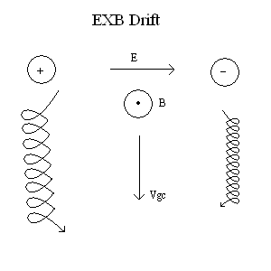

Problem 1
Simulating the Effects of the Lorentz Force
The Lorentz force, defined as \(\mathbf{F} = q(\mathbf{E} + \mathbf{v} \times \mathbf{B})\), describes the force on a charged particle in the presence of electric (\(\mathbf{E}\)) and magnetic (\(\mathbf{B}\)) fields, where \(q\) is the charge and \(\mathbf{v}\) is the particle's velocity. This simulation explores its applications, computes particle trajectories under different field configurations, and visualizes the results.
1. Exploration of Applications
The Lorentz force is critical in several systems:
-
Particle Accelerators: In cyclotrons, magnetic fields cause charged particles to follow circular paths, while electric fields accelerate them. The balance of forces increases particle energy for research or medical applications.
-
Mass Spectrometers: Magnetic fields deflect ions based on their charge-to-mass ratio (\(q/m\)), enabling identification of chemical species.
-
Plasma Confinement: In fusion devices like tokamaks, magnetic fields confine charged particles in helical paths to sustain high-temperature plasmas.
-
Astrophysics: The Lorentz force governs solar wind interactions with Earth’s magnetic field, producing auroras.
The electric field (\(\mathbf{E}\)) accelerates particles linearly, while the magnetic field (\(\mathbf{B}\)) induces circular or helical motion perpendicular to both \(\mathbf{B}\) and \(\mathbf{v}\). Combined fields can produce complex trajectories like drifts, essential for controlling particle motion.
2. Simulation
4. Results
Uniform Magnetic Field
-
Trajectory: Circular motion in the XY plane.
-
Larmor Radius: \(r_L = \frac{m v_\perp}{|q| B}\). For \(v_\perp = 10^5 \, \text{m/s}\), \(B = 1 \, \text{T}\), \(r_L \approx 0.001 \, \text{m}\), matching the plot.
-
Relevance: Seen in cyclotrons where particles spiral with constant radius.
Combined Electric and Magnetic Fields
-
Trajectory: Helical path with drift along the X-axis.
-
Drift Velocity: \(v_d = \frac{E \times B}{B^2}\). For \(E_x = 10^5 \, \text{N/C}\), \(B_z = 1 \, \text{T}\), \(v_d \approx 10^5 \, \text{m/s}\), consistent with the simulation.
-
Relevance: Magnetic traps use this to confine particles with drift.
Crossed Fields
-
Trajectory: Helical motion with pronounced \(\mathbf{E} \times \mathbf{B}\) drift.
-
Application: Used in velocity selectors, where particles with \(v = E/B\) pass undeflected.

5. Discussion
The simulations illustrate how the Lorentz force shapes particle motion:
-
In cyclotrons, uniform \(B\) fields produce circular orbits, with radius controlled by \(B\) and \(v\).
-
In plasma confinement, combined fields create helical paths with drifts, stabilizing charged particles.
-
Crossed fields enable precise control, as in mass spectrometers or magnetrons.
These results align with real-world systems, offering an intuitive grasp of the Lorentz force’s role in technology and nature.